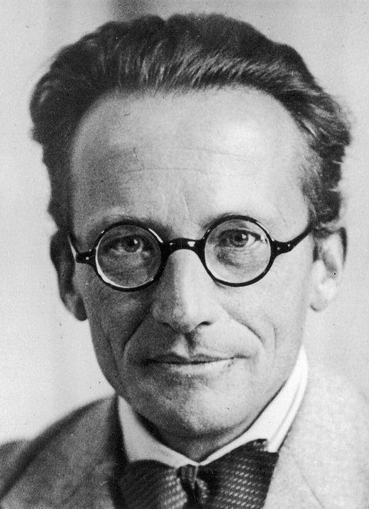
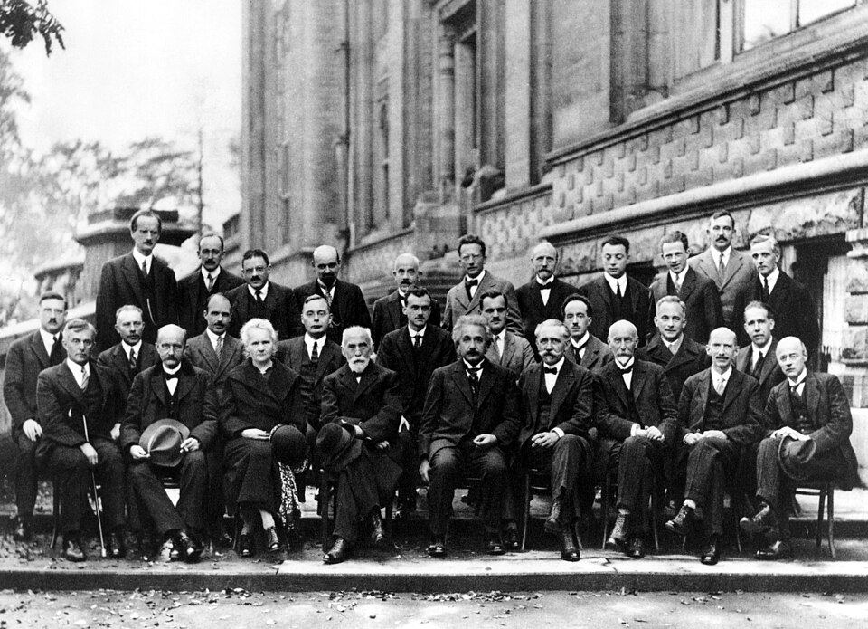
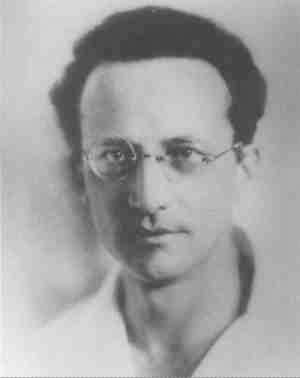
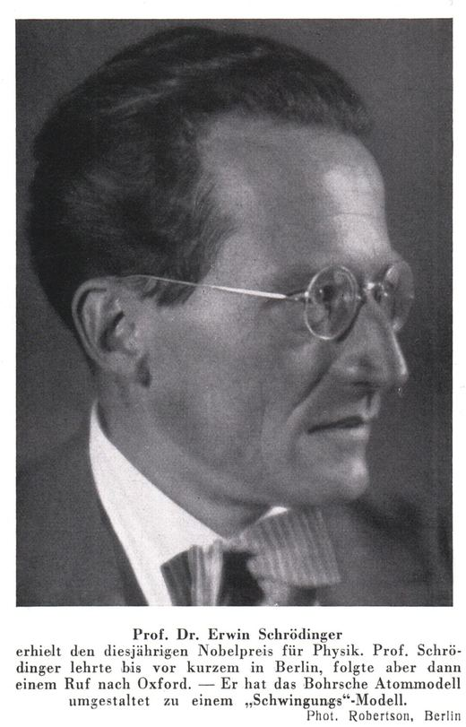
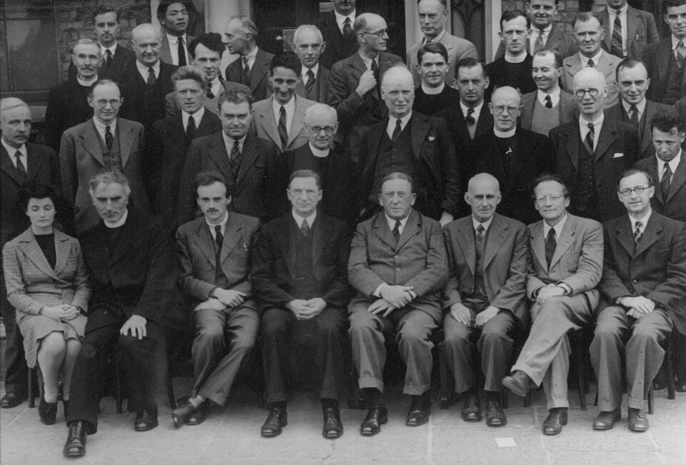

<title>Schrödinger Equation at 100</title>
<meta name="claude:viewport-fit-sides" content="cover">
<link rel="stylesheet" href="https://fonts.googleapis.com/css2?family=Instrument+Serif:ital@0;1&family=IBM+Plex+Sans:wght@400;500;600&family=IBM+Plex+Mono:wght@400;500&display=swap">
<style>
/* Layout: one reading column of prose that widens into full-width "instrument panels" for each interactive tool.
   Palette is taken from hydrogen's Balmer lines (H-alpha red, H-beta blue-green, H-gamma violet) on a cool paper ground. */
:root{
  --bg:#f2f5fa; --surface:#ffffff; --panel:#e7edf6; --ink:#101a2e; --muted:#536079; --line:#d2dae7;
  --ha:#c8102e; --hb:#0b7a9e; --hg:#5a45c9; --ok:#1c7c4a;
  --display:"Instrument Serif","Iowan Old Style","Palatino Linotype",Georgia,serif;
  --body:"IBM Plex Sans","Segoe UI",system-ui,sans-serif;
  --mono:"IBM Plex Mono",ui-monospace,Menlo,Consolas,monospace;
}
@media (prefers-color-scheme: dark){ :root:not([data-theme="light"]){
  --bg:#0a111f; --surface:#111a2d; --panel:#0e1727; --ink:#e8eefa; --muted:#9aa8c2; --line:#27344d;
  --ha:#ff6477; --hb:#4cc3e6; --hg:#a898ff; --ok:#5fd093; color-scheme:dark } }
:root[data-theme="dark"]{
  --bg:#0a111f; --surface:#111a2d; --panel:#0e1727; --ink:#e8eefa; --muted:#9aa8c2; --line:#27344d;
  --ha:#ff6477; --hb:#4cc3e6; --hg:#a898ff; --ok:#5fd093; color-scheme:dark }

*{box-sizing:border-box}
body{background:var(--bg);color:var(--ink);font-family:var(--body);font-size:17px;line-height:1.6}
.wrap{max-width:1040px;margin:0 auto;padding-left:max(16px,env(safe-area-inset-left,0px));padding-right:max(16px,env(safe-area-inset-right,0px))}
.prose{max-width:68ch}
h1,h2,h3{font-family:var(--display);font-weight:400;text-wrap:balance;line-height:1.08;margin:0}
h1{font-size:clamp(2.6rem,8vw,5.2rem);letter-spacing:-.01em}
h2{font-size:clamp(2rem,5vw,3rem)}
h3{font-size:1.55rem}
p{margin:0}
a{color:var(--hb)}
a:focus-visible,button:focus-visible,select:focus-visible,input:focus-visible{outline:2px solid var(--hg);outline-offset:2px}
.eyebrow{font-family:var(--mono);font-size:.75rem;letter-spacing:.12em;text-transform:uppercase;color:var(--muted)}
.stack{display:flex;flex-direction:column;gap:16px}
.stack-l{display:flex;flex-direction:column;gap:28px}
section{padding-block:56px;border-top:1px solid var(--line)}
.small{font-size:.86rem;color:var(--muted)}
.mono{font-family:var(--mono)}
i.m{font-family:var(--display);font-style:italic;font-size:1.15em;line-height:1}

/* hero */
header.hero{padding-block:48px 40px}
.spectrum-rule{height:6px;display:flex;border-radius:3px;overflow:hidden}
.spectrum-rule span{flex:1}
.eqn{font-family:var(--display);font-size:clamp(1.7rem,6.4vw,3.6rem);display:flex;flex-wrap:wrap;align-items:center;gap:.12em .2em;line-height:1.2}
.eqn button{font:inherit;color:inherit;background:none;border:0;border-bottom:3px solid var(--line);padding:.05em .18em;cursor:pointer;border-radius:6px 6px 0 0;font-style:italic}
.eqn button:hover{background:var(--panel)}
.eqn button[aria-pressed="true"]{border-bottom-color:var(--ha);background:var(--panel)}
.eqn .op{font-style:normal;color:var(--muted)}
.term-note{background:var(--surface);border:1px solid var(--line);border-radius:10px;padding:16px 18px;min-height:6.5em}
.term-note b{font-family:var(--mono);font-weight:500;font-size:.85rem;letter-spacing:.04em;color:var(--ha)}

/* nav */
nav.toc{position:sticky;top:env(safe-area-inset-top,0px);z-index:5;background:var(--bg);border-bottom:1px solid var(--line)}
nav.toc .wrap{display:flex;gap:6px;overflow-x:auto;padding-block:10px;scrollbar-width:thin}
nav.toc a{flex:none;font-family:var(--mono);font-size:.76rem;text-decoration:none;color:var(--muted);padding:5px 10px;border:1px solid var(--line);border-radius:999px;background:var(--surface)}
nav.toc a:hover{color:var(--ink);border-color:var(--muted)}
body::before{content:"";position:fixed;inset:0 0 auto;height:env(safe-area-inset-top,0px);z-index:10;background:var(--bg)}

/* instrument panels */
.tool{background:var(--panel);border:1px solid var(--line);border-radius:14px;padding:20px;display:flex;flex-direction:column;gap:14px}
.tool-head{display:flex;flex-wrap:wrap;justify-content:space-between;gap:6px 16px;align-items:baseline}
.tool-head .tag{font-family:var(--mono);font-size:.72rem;letter-spacing:.1em;text-transform:uppercase;color:var(--hb)}
.tool canvas{display:block;width:100%;background:var(--surface);border:1px solid var(--line);border-radius:8px}
.controls{display:flex;flex-wrap:wrap;gap:12px 20px;align-items:center}
.controls label{display:flex;flex-direction:column;gap:2px;font-size:.8rem;color:var(--muted);min-width:0;flex:1 1 180px}
.controls label.narrow{flex:0 1 120px}
.controls output{font-family:var(--mono);color:var(--ink);font-variant-numeric:tabular-nums}
input[type=range]{width:100%;accent-color:var(--hb)}
select{font:inherit;font-size:.92rem;padding:6px 8px;border-radius:8px;border:1px solid var(--line);background:var(--surface);color:var(--ink)}
.btn{font:inherit;font-size:.88rem;font-weight:500;padding:8px 14px;border-radius:8px;border:1px solid var(--line);background:var(--surface);color:var(--ink);cursor:pointer}
.btn:hover{border-color:var(--muted)}
.btn.primary{background:var(--ink);color:var(--bg);border-color:var(--ink)}
.btn[aria-pressed="true"]{background:var(--ink);color:var(--bg);border-color:var(--ink)}
.btnrow{display:flex;flex-wrap:wrap;gap:8px}
.readout{font-family:var(--mono);font-size:.84rem;font-variant-numeric:tabular-nums;display:flex;flex-wrap:wrap;gap:6px 22px}
.readout b{font-weight:500;color:var(--muted)}
.verdict{font-weight:600}
.verdict.good{color:var(--ok)} .verdict.bad{color:var(--ha)}
.legend{display:flex;flex-wrap:wrap;gap:4px 16px;font-size:.78rem;color:var(--muted)}
.legend span::before{content:"";display:inline-block;width:14px;height:3px;margin-right:6px;vertical-align:middle;background:var(--c)}
.split{display:grid;grid-template-columns:minmax(0,1fr) minmax(0,1fr);gap:20px;align-items:start}
.split>*{min-width:0}
@media (max-width:720px){.split{grid-template-columns:minmax(0,1fr)}}

/* papers */
.yeartrack{position:relative;height:34px;border-bottom:1px solid var(--muted)}
.yeartrack i{position:absolute;bottom:-5px;width:9px;height:9px;border-radius:50%;background:var(--muted);transform:translateX(-50%)}
.yeartrack i.on{background:var(--ha);width:13px;height:13px;bottom:-7px}
.yeartrack span{position:absolute;top:0;font-family:var(--mono);font-size:.66rem;color:var(--muted);transform:translateX(-50%)}
.paper{background:var(--surface);border:1px solid var(--line);border-radius:10px;padding:20px;display:flex;flex-direction:column;gap:12px}
.paper .formula{font-family:var(--display);font-style:italic;font-size:1.45rem;overflow-x:auto;padding:6px 0;white-space:nowrap}
.paper dl{display:grid;grid-template-columns:auto minmax(0,1fr);gap:4px 14px;margin:0;font-size:.86rem}
.paper dt{font-family:var(--mono);color:var(--muted);font-size:.76rem;padding-top:2px}
.paper dd{margin:0}

/* cat */
.catbox{background:var(--surface);border:1px solid var(--line);border-radius:8px;padding:10px}
.catbox svg{display:block;width:100%;height:auto;max-height:260px}
.bar{height:22px;background:var(--surface);border:1px solid var(--line);border-radius:4px;overflow:hidden;display:flex}
.bar div{height:100%}
.tally{display:grid;grid-template-columns:auto minmax(0,1fr) auto;gap:6px 10px;align-items:center;font-size:.84rem}
.tally .n{font-family:var(--mono);font-variant-numeric:tabular-nums}

/* scale */
.scale-row{display:grid;grid-template-columns:minmax(0,15em) minmax(0,1fr);gap:4px 16px;align-items:center;padding:8px 0;border-top:1px solid var(--line)}
.scale-row .lab{font-size:.9rem}
.scale-row .lab small{display:block;color:var(--muted);font-family:var(--mono);font-size:.72rem}
.scale-track{position:relative;height:16px;background:linear-gradient(var(--line),var(--line)) center/100% 1px no-repeat}
.scale-track i{position:absolute;top:2px;width:12px;height:12px;border-radius:50%;background:var(--hg);transform:translateX(-50%)}
.scale-track i.cat{background:var(--ha)}
.scale-axis{display:grid;grid-template-columns:minmax(0,15em) minmax(0,1fr);gap:16px}
.scale-axis div{position:relative;height:18px}
.scale-axis span{position:absolute;font-family:var(--mono);font-size:.66rem;color:var(--muted);transform:translateX(-50%);white-space:nowrap}
@media (max-width:620px){.scale-row,.scale-axis{grid-template-columns:minmax(0,1fr)}.scale-axis div:first-child{display:none}}

/* timeline */
.tl{display:flex;flex-direction:column}
.tl-item{display:grid;grid-template-columns:4.4em minmax(0,1fr);gap:14px;padding:12px 0;border-top:1px solid var(--line)}
.tl-item .y{font-family:var(--mono);font-size:.9rem;font-variant-numeric:tabular-nums;color:var(--muted)}
.tl-item .k{font-family:var(--mono);font-size:.66rem;letter-spacing:.08em;text-transform:uppercase;margin-right:8px}
.k.sci{color:var(--hb)} .k.life{color:var(--hg)} .k.pol{color:var(--ha)}
.tl-item p{font-size:.95rem}

.grid2{display:grid;grid-template-columns:repeat(auto-fit,minmax(min(100%,290px),1fr));gap:24px 32px}
.grid2 h3{font-size:1.35rem;margin-bottom:6px}
.grid2 p{font-size:.95rem}
.note{border-left:3px solid var(--ha);padding:4px 0 4px 16px}
blockquote{margin:0;font-family:var(--display);font-style:italic;font-size:1.5rem;line-height:1.25;max-width:30em}
blockquote footer{font-family:var(--body);font-style:normal;font-size:.82rem;color:var(--muted);margin-top:8px}

.photos{display:grid;grid-template-columns:repeat(auto-fit,minmax(min(100%,230px),1fr));gap:12px}
.photos a{display:block;text-decoration:none;color:var(--ink);background:var(--surface);border:1px solid var(--line);border-radius:10px;padding:14px 16px}
.photos a:hover{border-color:var(--hb)}
.photos a b{display:block;font-weight:500}
.photos a span{font-size:.8rem;color:var(--muted)}

.hero-top{display:grid;grid-template-columns:minmax(0,1fr) minmax(0,240px);gap:32px;align-items:start}
@media (max-width:720px){.hero-top{grid-template-columns:minmax(0,1fr)}.ph.portrait{max-width:220px}}
figure.ph{margin:0;display:flex;flex-direction:column;gap:8px;min-width:0}
figure.ph img{display:block;width:100%;height:auto;border-radius:8px;border:1px solid var(--line);background:var(--panel)}
figure.ph figcaption{font-size:.82rem;color:var(--muted);line-height:1.45}
figure.ph figcaption span{display:block;font-family:var(--mono);font-size:.7rem}
.ph-row{display:grid;grid-template-columns:repeat(auto-fit,minmax(min(100%,200px),1fr));gap:20px;align-items:start}
.quiz-q{background:var(--surface);border:1px solid var(--line);border-radius:10px;padding:16px;display:flex;flex-direction:column;gap:10px}
.quiz-q .btn.right{background:var(--ok);border-color:var(--ok);color:var(--bg)}
.quiz-q .btn.wrong{border-color:var(--ha);color:var(--ha)}

ol.refs{margin:0;padding-left:2.2em;display:flex;flex-direction:column;gap:8px;font-size:.88rem}
ol.refs a{font-family:var(--mono);font-size:.8rem;overflow-wrap:anywhere}
footer.end{padding-block:32px 48px;border-top:1px solid var(--line)}
@media (prefers-reduced-motion:reduce){*{scroll-behavior:auto}}
</style>

<header class="hero"><div class="wrap stack-l">
  <div class="spectrum-rule" aria-hidden="true"><span style="background:var(--ha)"></span><span style="background:var(--hb)"></span><span style="background:var(--hg)"></span></div>
  <div class="hero-top">
  <div class="stack">
    <p class="eyebrow">1926 → 2026 · Annalen der Physik, vols. 79–81</p>
    <h1>One hundred years of the Schrödinger equation</h1>
    <p class="prose">Between January and June 1926, a 38-year-old Austrian professor in Zurich sent a four-part series of papers to one journal. Together they replaced the picture of electrons as tiny planets with a wave, written <i class="m">ψ</i>, and gave the rule for how that wave moves. Nearly all of chemistry, electronics and quantum technology is calculated from it. Tap any part of the equation to see what it says.</p>
  </div>
  <figure class="ph portrait"><figcaption>Erwin Schrödinger in 1933, the year of his Nobel Prize. <span>Narodowe Archiwum Cyfrowe, public domain.</span></figcaption></figure>
  </div>
  <div class="eqn" id="eqn" role="group" aria-label="The time-dependent Schrödinger equation; select a term">
    <button type="button" data-t="i" aria-pressed="false">iℏ</button>
    <button type="button" data-t="dt" aria-pressed="true">∂ψ/∂t</button>
    <span class="op">=</span>
    <button type="button" data-t="kin" aria-pressed="false">−(ℏ²/2m) ∇²ψ</button>
    <span class="op">+</span>
    <button type="button" data-t="pot" aria-pressed="false">V ψ</button>
  </div>
  <div class="term-note" id="termNote" aria-live="polite"></div>
</div></header>

<nav class="toc" aria-label="Sections"><div class="wrap">
  <a href="#papers">The 1926 papers</a><a href="#eigen">Why energy is quantised</a><a href="#hydrogen">Hydrogen</a><a href="#motion">Waves in motion</a><a href="#cat">The cat</a><a href="#entangle">Entanglement</a><a href="#beyond">Other work</a><a href="#life">Life</a><a href="#disputes">Controversies</a><a href="#photos">Photos</a><a href="#quiz">Quiz</a><a href="#refs">References</a>
</div></nav>

<main>
<section id="papers"><div class="wrap stack-l">
  <div class="stack prose">
    <p class="eyebrow">The 1926 papers</p>
    <h2>Six months, six papers</h2>
    <p>In 1925 physics had a problem. Niels Bohr's model said electrons in atoms may only have certain energies, but nobody could say why. Louis de Broglie had proposed in his 1924 thesis that particles of matter also behave as waves. At a Zurich seminar late in 1925, Peter Debye reportedly remarked that if there are waves, there ought to be a wave equation. Schrödinger found it over the Christmas holidays at Arosa in the Swiss Alps.</p>
    <p>He published it as a series titled <em>Quantisierung als Eigenwertproblem</em> ("Quantisation as an Eigenvalue Problem"), with three companion papers. Select a paper to read what it contains.</p>
  </div>
  <div class="stack">
    <div class="yeartrack" id="yearTrack" aria-hidden="true"></div>
    <div class="btnrow" id="paperTabs" role="tablist" aria-label="Papers of 1926"></div>
    <div class="paper" id="paperCard" role="tabpanel" aria-live="polite"></div>
  </div>
  <div class="note prose"><p><strong>What is <i class="m">ψ</i>?</strong> Schrödinger first thought <i class="m">|ψ|²</i> described electric charge really smeared through space. In June 1926 Max Born proposed the reading that stuck: <i class="m">|ψ|²</i> is the probability of finding the particle at each place. Schrödinger never fully accepted it, and that disagreement produced his cat nine years later.</p></div>
</div></section>

<section id="eigen"><div class="wrap stack-l">
  <div class="stack prose">
    <p class="eyebrow">First communication · January 1926</p>
    <h2>Why energy comes in steps</h2>
    <p>A guitar string fixed at both ends can only vibrate in whole numbers of half-waves. Schrödinger showed that atomic energy levels arise the same way. A bound electron's wave must stay finite everywhere, and only special energies allow that. Mathematicians call those special values eigenvalues, which explains the title of the series.</p>
    <p>Try it. This particle sits in a bowl-shaped trap (a "harmonic oscillator", treated in the second paper). Move the energy slider. For almost every energy the wave runs off to infinity, which is physically impossible. Only at certain energies does it settle back to zero.</p>
  </div>
  <div class="tool">
    <div class="tool-head"><h3>Find the allowed energies</h3><span class="tag">Tool · eigenvalue hunter</span></div>
    <canvas id="shootCv" height="300" style="height:300px" aria-label="Wavefunction in a harmonic trap for the chosen energy"></canvas>
    <div class="legend"><span style="--c:var(--hb)">wave ψ at this energy</span><span style="--c:var(--muted)">trap V(x)</span><span style="--c:var(--ha)">chosen energy</span></div>
    <div class="controls">
      <label for="shootE">Energy <output id="shootEo"></output><input type="range" id="shootE" min="0.1" max="5.8" step="0.01" value="1.18"></label>
    </div>
    <div class="btnrow" id="shootSnap" aria-label="Jump to an allowed energy"></div>
    <div class="readout"><span id="shootVerdict" class="verdict"></span><span><b>nodes </b><span id="shootNodes"></span></span></div>
    <p class="small">The allowed values are ½, 1½, 2½ … in units of ℏω. They are evenly spaced, and the lowest is not zero: a quantum particle can never sit perfectly still at the bottom of the trap.</p>
  </div>
</div></section>

<section id="hydrogen"><div class="wrap stack-l">
  <div class="stack prose">
    <p class="eyebrow">First and third communications</p>
    <h2>The hydrogen atom, solved</h2>
    <p>The first paper applied the equation to the simplest atom, one electron held by one proton. Out came Bohr's energy levels, <i class="m">E<sub>n</sub></i> = −13.6 eV / <i class="m">n</i>², with no extra assumptions. The integers <i class="m">n</i>, <i class="m">l</i> and <i class="m">m</i> are not put in by hand. They come out of the requirement that the wave be finite and single-valued, and they count its nodes. These wave shapes are the orbitals of every chemistry textbook.</p>
  </div>
  <div class="split">
    <div class="tool">
      <div class="tool-head"><h3>Orbital viewer</h3><span class="tag">Tool · |ψ|² slice</span></div>
      <canvas id="orbCv" style="aspect-ratio:1;max-width:100%" aria-label="Probability density of the chosen hydrogen orbital"></canvas>
      <div class="controls">
        <label class="narrow" for="orbN">n (shell)<select id="orbN"></select></label>
        <label class="narrow" for="orbL">l (shape)<select id="orbL"></select></label>
        <label class="narrow" for="orbM">|m| (orientation)<select id="orbM"></select></label>
      </div>
      <div class="readout" id="orbOut"></div>
      <p class="small">A vertical slice through the atom. Brighter means the electron is more likely to be found there. Dark rings and lines are nodes, where the wave is zero. Faint regions are brightened so that they show, and the scale bar changes with the shell.</p>
    </div>
    <div class="tool">
      <div class="tool-head"><h3>Light from a jump</h3><span class="tag">Tool · spectrum</span></div>
      <canvas id="specCv" height="120" style="height:120px" aria-label="Visible spectrum with hydrogen emission lines"></canvas>
      <div class="controls">
        <label class="narrow" for="specHi">from level<select id="specHi"></select></label>
        <label class="narrow" for="specLo">down to level<select id="specLo"><option value="1">1 (Lyman)</option><option value="2" selected>2 (Balmer)</option><option value="3">3 (Paschen)</option></select></label>
      </div>
      <div class="readout" id="specOut"></div>
      <p class="small">When the electron drops between levels, the atom emits light whose energy equals the gap. Jumps ending on level 2 give the visible Balmer lines; this page's red, blue-green and violet are those lines. In the third paper Schrödinger used perturbation theory to work out how an electric field splits them (the Stark effect), and his calculated line strengths agreed reasonably well with the measurements.</p>
    </div>
  </div>
</div></section>

<section id="motion"><div class="wrap stack-l">
  <div class="stack prose">
    <p class="eyebrow">Fourth communication · June 1926</p>
    <h2>Waves in motion</h2>
    <p>The first three papers dealt with waves of fixed energy. The fourth gave the full law of motion, the equation at the top of this page, and with it the imaginary number <i class="m">i</i>. Schrödinger disliked a complex wave at first, but it is unavoidable: the real and imaginary parts chase each other, and that is what makes the wave travel.</p>
    <p>Below, the equation is solved live in your browser. Send a particle at a wall it does not have enough energy to climb. Part of the wave leaks through anyway. This is tunnelling, the effect behind alpha radioactivity, nuclear fusion in the Sun, flash memory and the scanning tunnelling microscope.</p>
  </div>
  <div class="tool">
    <div class="tool-head"><h3>Wave-packet laboratory</h3><span class="tag">Tool · live solver</span></div>
    <canvas id="wpCv" height="320" style="height:320px" aria-label="Animated wave packet"></canvas>
    <div class="legend"><span style="--c:var(--hb)">probability |ψ|²</span><span style="--c:var(--hg)">real part of ψ</span><span style="--c:var(--muted)">potential V(x)</span><span style="--c:var(--ha)">particle's energy</span></div>
    <div class="btnrow" id="wpPresets">
      <button type="button" class="btn" data-p="free" aria-pressed="false">Free particle</button>
      <button type="button" class="btn" data-p="barrier" aria-pressed="true">Barrier (tunnelling)</button>
      <button type="button" class="btn" data-p="well" aria-pressed="false">Trap (1926 "non-spreading" packet)</button>
    </div>
    <div class="controls">
      <label for="wpK"><span id="wpKl">Momentum</span> <output id="wpKo"></output><input type="range" id="wpK" min="1.5" max="6" step="0.1" value="4"></label>
      <label for="wpV">Barrier height <output id="wpVo"></output><input type="range" id="wpV" min="0" max="24" step="0.5" value="10"></label>
      <div class="btnrow"><button type="button" class="btn primary" id="wpPlay">Pause</button><button type="button" class="btn" id="wpReset">Restart</button></div>
    </div>
    <div class="readout" id="wpOut"></div>
    <p class="small" id="wpNote"></p>
  </div>

  <div class="tool">
    <div class="tool-head"><h3>Mix two states</h3><span class="tag">Tool · superposition</span></div>
    <canvas id="mixCv" height="230" style="height:230px" aria-label="Probability density of a superposition in a box"></canvas>
    <div class="controls">
      <label class="narrow" for="mixA">state A<select id="mixA"></select></label>
      <label class="narrow" for="mixB">state B<select id="mixB"></select></label>
      <label for="mixW">Share of B <output id="mixWo"></output><input type="range" id="mixW" min="0" max="100" step="1" value="50"></label>
    </div>
    <div class="readout" id="mixOut"></div>
    <p class="small">A particle in a box. One state alone gives a pattern that never changes. Because the equation is linear, any mixture of solutions is also a solution, and a mixture sloshes back and forth at a rate set by the energy gap. Schrödinger saw in this the origin of emitted light. The same linearity, applied to a whole laboratory, is what leads to the cat.</p>
  </div>
</div></section>

<section id="cat"><div class="wrap stack-l">
  <div class="stack prose">
    <p class="eyebrow">Naturwissenschaften · 1935</p>
    <h2>Schrödinger's cat</h2>
    <p>The cat was meant as an objection. In 1935, prompted by the Einstein–Podolsky–Rosen paper and letters exchanged with Einstein, Schrödinger described what he called a "quite ridiculous case". A cat is shut in a steel chamber with a tiny amount of radioactive material, so little that in one hour one atom decays with probability one half. A decay trips a Geiger counter, which releases a hammer, which breaks a flask of poison.</p>
    <blockquote>"The ψ-function of the entire system would express this by having in it the living and dead cat (pardon the expression) mixed or smeared out in equal parts."<footer>E. Schrödinger, 1935, translated by J. D. Trimmer</footer></blockquote>
    <p>His point: if the equation applies to everything, an undecided atom makes an undecided cat, and nobody believes in those. So either the wave function is not the whole description of reality, or something about measurement needs explaining. Physicists still argue about which.</p>
  </div>
  <div class="tool">
    <div class="tool-head"><h3>Run the experiment</h3><span class="tag">Tool · thought experiment</span></div>
    <div class="split">
      <div class="stack">
        <div class="catbox"><svg viewBox="0 0 320 220" role="img" aria-labelledby="catTitle"><title id="catTitle">Cat in a closed chamber</title>
          <rect x="6" y="6" width="308" height="208" rx="8" fill="none" stroke="var(--muted)" stroke-width="2"/>
          <g id="lid"><rect x="6" y="6" width="308" height="208" rx="8" fill="var(--panel)" opacity=".55"/><text x="160" y="205" text-anchor="middle" font-family="IBM Plex Mono,monospace" font-size="11" fill="var(--muted)">box closed: no one has looked</text></g>
          <g fill="none" stroke="var(--muted)" stroke-width="2"><rect x="24" y="150" width="36" height="34" rx="3"/><path d="M60 160h22v-34"/><path d="M82 126l20 10" id="hammer" stroke-width="4" stroke-linecap="round"/></g>
          <path id="flask" d="M96 184h22l-5-22v-10h-12v10z" fill="var(--hb)" opacity=".7"/>
          <text x="42" y="171" text-anchor="middle" font-family="IBM Plex Mono,monospace" font-size="10" fill="var(--muted)">Geiger</text>
          <g id="catAlive" fill="var(--ink)"><ellipse cx="218" cy="150" rx="34" ry="40"/><circle cx="218" cy="92" r="24"/><path d="M198 80l-4-24 18 12zM238 80l4-24-18 12z"/><path d="M250 176c30 6 34-26 22-40" fill="none" stroke="var(--ink)" stroke-width="8" stroke-linecap="round"/><circle cx="209" cy="90" r="3.5" fill="var(--surface)"/><circle cx="227" cy="90" r="3.5" fill="var(--surface)"/></g>
          <g id="catDead" fill="var(--ha)"><ellipse cx="214" cy="170" rx="46" ry="18"/><circle cx="268" cy="166" r="20"/><path d="M256 152l-6-18 16 8zM282 152l8-17-17 6z"/><path d="M170 172c-26 4-34-6-40-14" fill="none" stroke="var(--ha)" stroke-width="7" stroke-linecap="round"/><path d="M259 161l6 6m0-6l-6 6M272 161l6 6m0-6l-6 6" stroke="var(--surface)" stroke-width="2" fill="none"/></g>
        </svg></div>
        <div class="readout" id="catState" aria-live="polite"></div>
      </div>
      <div class="stack">
        <div class="controls"><label for="catT">Time sealed in the box <output id="catTo"></output><input type="range" id="catT" min="0" max="240" step="5" value="60"></label></div>
        <div><p class="small">What the wave function holds before anyone looks</p>
          <div class="bar" aria-hidden="true"><div id="catPa" style="background:var(--ink)"></div><div id="catPd" style="background:var(--ha)"></div></div>
          <div class="readout" id="catProb"></div></div>
        <div class="btnrow"><button type="button" class="btn primary" id="catOpen">Open the box</button><button type="button" class="btn" id="catClose">Seal a new box</button><button type="button" class="btn" id="cat100">Open 100 boxes</button></div>
        <div class="tally">
          <span>alive</span><div class="bar"><div id="tallyA" style="background:var(--ink)"></div></div><span class="n" id="tallyAn">0</span>
          <span>dead</span><div class="bar"><div id="tallyD" style="background:var(--ha)"></div></div><span class="n" id="tallyDn">0</span>
        </div>
        <p class="small">Each opened box shows one definite cat. Only the statistics over many boxes reveal the probabilities the equation predicted. The original set-up uses one hour, giving exactly 50 : 50. Note what this tool cannot show: counting opened boxes looks the same whether the cat was in a superposition or was simply alive or dead all along without our knowing. Telling those apart takes an interference experiment, which is what the laboratory "cat states" below achieve.</p>
      </div>
    </div>
  </div>

  <div class="stack prose">
    <h3>How large can a "cat" be?</h3>
    <p>Real experiments now put ever larger objects into two states at once. They also show why real cats never appear smeared: stray air molecules and light carry away information about a big, warm object almost instantly. This process, decoherence, hides superpositions long before anyone opens the box.</p>
  </div>
  <div class="tool">
    <div class="tool-head"><h3>Objects seen in quantum superposition, by mass</h3><span class="tag">Chart · logarithmic scale</span></div>
    <div id="scaleRows"></div>
    <div class="scale-axis"><div></div><div id="scaleAxis"></div></div>
    <p class="small">Each step along the axis is a factor of ten in mass. The 2023 crystal is a superposition of two vibration states, with atoms displaced by far less than their own size, so it is not yet a cat in two places. About eight powers of ten still separate it from a real one.</p>
  </div>
</div></section>

<section id="entangle"><div class="wrap stack-l">
  <div class="stack prose">
    <p class="eyebrow">Proc. Cambridge Philosophical Society · 1935</p>
    <h2>Entanglement</h2>
    <p>In the same year Schrödinger named the feature he thought set quantum theory apart: <em>Verschränkung</em>, entanglement. Two particles that have interacted share a single wave function, so their measurement results stay linked however far apart they travel. He called it not one but <em>the</em> characteristic trait of quantum mechanics.</p>
    <p>In 1964 John Bell showed how to test this. In the version used in laboratories, worked out by Clauser, Horne, Shimony and Holt in 1969, each side switches between two detector settings. If each particle secretly carried its answers in advance, a certain combination of the four correlations, <i class="m">S</i>, could never exceed 2. Quantum mechanics allows up to 2√2 ≈ 2.83. Run the test yourself.</p>
  </div>
  <div class="tool">
    <div class="tool-head"><h3>Bell test</h3><span class="tag">Tool · simulated pairs</span></div>
    <div class="split">
      <div class="stack">
        <canvas id="bellCv" height="250" style="height:250px" aria-label="Correlation versus angle between detectors"></canvas>
        <div class="legend"><span style="--c:var(--hb)">quantum prediction</span><span style="--c:var(--muted)">a simple "pre-agreed answers" model</span><span style="--c:var(--ha)">your measured points</span></div>
      </div>
      <div class="stack">
        <div class="controls">
          <label for="bA1">Alice, setting 1 <output id="bA1o"></output><input type="range" id="bA1" min="0" max="180" step="1" value="0"></label>
          <label for="bA2">Alice, setting 2 <output id="bA2o"></output><input type="range" id="bA2" min="0" max="180" step="1" value="90"></label>
          <label for="bB1">Bob, setting 1 <output id="bB1o"></output><input type="range" id="bB1" min="0" max="180" step="1" value="45"></label>
          <label for="bB2">Bob, setting 2 <output id="bB2o"></output><input type="range" id="bB2" min="0" max="180" step="1" value="135"></label>
        </div>
        <div class="btnrow"><button type="button" class="btn primary" id="bellRun">Measure 10,000 pairs</button><button type="button" class="btn" id="bellBest">Best angles</button></div>
        <div class="readout" id="bellOut" aria-live="polite"></div>
      </div>
    </div>
    <p class="small">Each detector measures spin along the chosen angle and reports +1 or −1. The simulation draws results from the quantum rule for an entangled pair, so numbers vary slightly from run to run, as in a real laboratory, and a lucky run can land a little above 2.83. The plotted value is the product of the two results averaged over many pairs: −1 means always opposite, +1 always the same. Experiments of this kind earned the 2022 Nobel Prize in Physics.</p>
  </div>
</div></section>

<section id="beyond"><div class="wrap stack-l">
  <div class="stack prose"><p class="eyebrow">Beyond the equation</p><h2>What else he did</h2>
  <p>Schrödinger published on almost every part of physics, and on biology and philosophy as well.</p></div>
  <div class="grid2">
    <div><h3>Colour</h3><p>In 1920 he built a geometric theory of colour vision, building on Helmholtz, in which the difference between two colours is a distance in a curved space. Colour scientists still cite it.</p></div>
    <div><h3>A relativistic equation, abandoned</h3><p>He first derived a relativistic wave equation in late 1925, but it gave the wrong fine structure for hydrogen, so he published the simpler version. The discarded one is now the Klein–Gordon equation.</p></div>
    <div><h3>Coherent states</h3><p>His July 1926 note found wave packets in an oscillator that swing without spreading. They became the standard description of laser light. You can watch one in the "Trap" preset above.</p></div>
    <div><h3>Equivalence of two theories</h3><p>In March 1926 he showed that his wave mechanics and Heisenberg's matrix mechanics, which looked nothing alike, always give the same numbers.</p></div>
    <div><h3>Zitterbewegung</h3><p>In 1930 he noticed that Dirac's equation makes a free electron appear to tremble at enormous frequency, an effect still studied in analogue systems.</p></div>
    <div><h3>Particles from expanding space</h3><p>A 1939 paper showed that an expanding universe can create pairs of particles out of the vacuum, an idea central to modern cosmology.</p></div>
    <div><h3>Factorisation method</h3><p>In Dublin in 1940 he found a way to solve the equation by splitting it into ladder operators. It grew into supersymmetric quantum mechanics.</p></div>
    <div><h3>What Is Life?</h3><p>His 1943 Dublin lectures, published in 1944, argued that heredity must be stored in an "aperiodic crystal" carrying a code. Francis Crick, James Watson and Maurice Wilkins all said the book helped draw them to the problem of the gene.</p></div>
    <div><h3>Philosophy</h3><p>He wrote on the Greeks, on mind and matter, and was a lifelong reader of Vedanta, from which he took the idea that consciousness is one.</p></div>
  </div>
  <div class="stack prose">
    <h3>What the equation made possible</h3>
    <p>Chemical bonds, the periodic table, semiconductors and transistors, lasers, magnetic resonance imaging, superconductors and nuclear energy are all computed from this equation or its descendants. Quantum computers are machines built to steer a wave function on purpose, and some designs store information in what engineers call "cat qubits".</p>
  </div>
</div></section>

<section id="life"><div class="wrap stack-l">
  <div class="stack prose"><p class="eyebrow">Vienna 1887 – Vienna 1961</p><h2>A life across seven countries</h2></div>
  <div class="btnrow" id="tlFilter" aria-label="Filter the timeline">
    <button type="button" class="btn" data-f="all" aria-pressed="true">Everything</button>
    <button type="button" class="btn" data-f="sci" aria-pressed="false">Science</button>
    <button type="button" class="btn" data-f="life" aria-pressed="false">Personal</button>
    <button type="button" class="btn" data-f="pol" aria-pressed="false">Politics and exile</button>
  </div>
  <div class="tl" id="tl"></div>
</div></section>

<section id="disputes"><div class="wrap stack-l">
  <div class="stack prose"><p class="eyebrow">The difficult parts</p><h2>Controversies</h2>
  <p>A centenary is a reason to look at the whole person. Some of what follows is scientific dispute, some is political, and some concerns serious harm.</p></div>
  <div class="grid2">
    <div><h3>At odds with his own theory</h3><p>Schrödinger wanted real waves, not probabilities and sudden jumps. Visiting Copenhagen in autumn 1926 he argued with Bohr until he fell ill; Heisenberg later recalled him saying that if those "damned quantum jumps" were here to stay, he was sorry he had ever got involved. He spent decades criticising the standard interpretation, alongside Einstein.</p></div>
    <div><h3>The 1938 letter</h3><p>After Germany annexed Austria, Schrödinger, known as an opponent of the Nazis, published a letter in a Graz newspaper declaring loyalty to the new regime. It did not save his post. He was dismissed, fled, and later told Einstein he regretted the letter.</p></div>
    <div><h3>The 1947 "unified theory"</h3><p>In Dublin he announced to the Royal Irish Academy, with the press present, that he had the unified field theory Einstein had sought for thirty years. Einstein answered dismissively in public, the theory led nowhere, and the two friends stopped writing to each other for about three years.</p></div>
    <div><h3>Household and affairs</h3><p>He and his wife Annemarie had an open marriage. His daughter Ruth was born in 1934 to Hilde March, the wife of a colleague, and for years Hilde lived with the couple. His biographer suggests the arrangement cost him goodwill at Oxford and Princeton. He had further children from relationships in Ireland.</p></div>
  </div>
  <div class="note prose stack">
    <h3>Abuse of girls</h3>
    <p>His diaries and Walter Moore's 1989 biography record that he pursued girls in their early teens. He tutored Itha ("Ithi") Junger when she was fourteen; the biography reports that he pursued her from then on, that they became lovers when she was seventeen, and that a later pregnancy ended in an abortion which left her unable to have children. In Dublin he wrote of his infatuation with a twelve-year-old.</p>
    <p>Reporting by <em>The Irish Times</em> in December 2021 brought this to wide attention. In 2022 the School of Physics at Trinity College Dublin decided to drop his name from its lecture theatre. Institutions and physicists continue to debate how to honour the work while being honest about the man.</p>
  </div>
</div></section>

<section id="photos"><div class="wrap stack-l">
  <div class="stack prose"><p class="eyebrow">Archive</p><h2>Photographs</h2>
  <p>All photographs come from Wikimedia Commons, where each file page gives its source and licence. Select a credit to open the original.</p></div>
  <figure class="ph"><figcaption>The fifth Solvay Conference, Brussels, October 1927. Schrödinger stands in the back row, sixth from the right. Einstein sits front and centre; Planck, Marie Curie, Lorentz, Bohr, Born, de Broglie, Heisenberg, Pauli and Dirac are all present. <a href="https://commons.wikimedia.org/wiki/File:Solvay_conference_1927.jpg" target="_blank" rel="noopener">Photo: Benjamin Couprie, public domain.</a></figcaption></figure>
  <div class="ph-row">
    <figure class="ph"><figcaption>Early in his career, about 1914. <a href="https://commons.wikimedia.org/wiki/File:Erwin_Schrodinger2.jpg" target="_blank" rel="noopener">Unknown photographer, public domain.</a></figcaption></figure>
    <figure class="ph"><figcaption>A German magazine announces "this year's Nobel Prize for Physics", 1933. <a href="https://commons.wikimedia.org/wiki/File:Portrait_of_Erwin_Schr%C3%B6dinger_(1887-1961),_Physicist_(2551920224).jpg" target="_blank" rel="noopener">Photo: Robertson, Berlin. Smithsonian Institution, no known restrictions.</a></figcaption></figure>
    <figure class="ph"><figcaption>Portrait, 1933. <a href="https://commons.wikimedia.org/wiki/File:Erwin_Schr%C3%B6dinger_-_Narodowe_Archiwum_Cyfrowe_(1-E-939).jpg" target="_blank" rel="noopener">Narodowe Archiwum Cyfrowe (1-E-939), public domain.</a></figcaption></figure>
  </div>
  <figure class="ph"><figcaption>Dublin Institute for Advanced Studies, 65 Merrion Square, 1942. Front row from left: Sheila Tinney, Pádraig de Brún, Paul Dirac, Éamon de Valera, Arthur Conway, Arthur Eddington, Erwin Schrödinger, Albert McConnell. <a href="https://commons.wikimedia.org/wiki/File:DIAS_1942_photo.jpg" target="_blank" rel="noopener">Photo: Cecil Keaveney, CC BY 3.0.</a></figcaption></figure>
  <div class="photos">
    <a href="https://commons.wikimedia.org/wiki/Category:Erwin_Schr%C3%B6dinger" target="_blank" rel="noopener"><b>All Schrödinger photographs</b><span>Portraits, the University of Vienna bust, banknote and memorials.</span></a>
    <a href="https://commons.wikimedia.org/wiki/Category:Grave_of_Erwin_Schr%C3%B6dinger" target="_blank" rel="noopener"><b>Grave at Alpbach, Tyrol</b><span>The iron cross carries his equation.</span></a>
    <a href="https://www.nobelprize.org/prizes/physics/1933/schrodinger/biographical/" target="_blank" rel="noopener"><b>Nobel Prize biography</b><span>Official 1933 biography and Nobel lecture.</span></a>
    <a href="https://commons.wikimedia.org/wiki/Category:Schr%C3%B6dinger%27s_cat" target="_blank" rel="noopener"><b>The cat in pictures</b><span>Diagrams and artworks of the thought experiment.</span></a>
  </div>
</div></section>

<section id="quiz"><div class="wrap stack-l">
  <div class="stack prose"><p class="eyebrow">Check yourself</p><h2>Four questions</h2></div>
  <div class="grid2" id="quizBox"></div>
  <p class="readout" id="quizScore" aria-live="polite"></p>
</div></section>

<section id="refs"><div class="wrap stack-l">
  <div class="stack prose"><p class="eyebrow">Sources</p><h2>References</h2><p class="small">Every DOI below was checked against the Crossref registry in November 2026. Works without a DOI are listed with full citations.</p></div>
  <ol class="refs" id="refList"></ol>
</div></section>
</main>

<footer class="end"><div class="wrap small">Simulations use scaled units (ℏ = m = 1) and run entirely in your browser. Made for the centenary of wave mechanics, 1926–2026.</div></footer>

<script>
(function(){
"use strict";
const $=id=>document.getElementById(id);
const cssv=n=>getComputedStyle(document.documentElement).getPropertyValue(n).trim();
const hex=h=>{h=h.replace('#','');if(h.length===3)h=h.split('').map(c=>c+c).join('');return[0,2,4].map(i=>parseInt(h.substr(i,2),16))};
function fit(cv){const r=cv.getBoundingClientRect(),d=Math.min(window.devicePixelRatio||1,2),w=Math.max(50,r.width),h=Math.max(50,r.height);
  if(cv.width!==Math.round(w*d)||cv.height!==Math.round(h*d)){cv.width=Math.round(w*d);cv.height=Math.round(h*d)}
  const c=cv.getContext('2d');c.setTransform(d,0,0,d,0,0);c.clearRect(0,0,w,h);return{c,w,h}}
const C=()=>({ink:cssv('--ink'),muted:cssv('--muted'),line:cssv('--line'),ha:cssv('--ha'),hb:cssv('--hb'),hg:cssv('--hg'),surface:cssv('--surface')});
const reduced=window.matchMedia&&matchMedia('(prefers-reduced-motion: reduce)').matches;
const statics=[];           // redraw functions for non-animated canvases
const anims=[];             // {cv, step, draw, on, vis}
function press(group,btn){group.querySelectorAll('button').forEach(b=>b.setAttribute('aria-pressed',b===btn?'true':'false'))}

/* ---------- equation anatomy ---------- */
const TERMS={
 i:['iℏ · the pacemaker','ℏ is Planck\'s constant, a tiny number that sets the scale at which quantum effects matter. The imaginary unit i makes the wave rotate between two components instead of simply growing or fading. That rotation keeps the total probability at exactly 100 %.'],
 dt:['∂ψ/∂t · how the wave changes','ψ (psi) is the wave function: one number, with a size and a phase, at every point in space. This term is its rate of change in time. The equation says: tell me the wave now, and I will tell you the wave at every later moment.'],
 kin:['−(ℏ²/2m) ∇²ψ · energy of motion','∇² measures how sharply the wave is curved. A tightly wiggling wave means a fast particle, so this term is the kinetic energy. Because the mass m sits underneath, heavy objects have tiny wave effects, which is why footballs do not diffract.'],
 pot:['Vψ · the surroundings','V is the potential energy: the pull of a nucleus, the walls of a box, an electric field. Everything about the particle\'s environment enters here. Change V and the same equation describes an atom, a molecule or a transistor.']};
function showTerm(k){$('termNote').innerHTML='<b>'+TERMS[k][0]+'</b><p>'+TERMS[k][1]+'</p>'}
$('eqn').addEventListener('click',e=>{const b=e.target.closest('button');if(!b)return;press($('eqn'),b);showTerm(b.dataset.t)});
showTerm('dt');

/* ---------- 1926 papers ---------- */
const PAPERS=[
 {tab:'I · Jan',day:27,title:'Quantisation as an Eigenvalue Problem, first communication',recv:'27 January 1926',cite:'Annalen der Physik 79, 361–376',f:'∇²ψ + (2m/ℏ²)(E − V) ψ = 0',
  txt:'The founding paper. Schrödinger replaces Bohr\'s rule of "whole numbers" with a demand that the wave ψ be finite and single-valued everywhere. For the hydrogen atom this alone yields the Bohr energy levels. Integers arise, he writes, in the same natural way as the number of nodes of a vibrating string.'},
 {tab:'II · Feb',day:54,title:'Second communication',recv:'23 February 1926',cite:'Annalen der Physik 79, 489–527',f:'E = (n + ½) ℏω',
  txt:'The reasoning behind the equation. Ordinary mechanics relates to wave mechanics as ray optics relates to wave optics: rays are a good approximation until things get as small as a wavelength. He then solves the oscillator (finding the half-quantum of zero-point energy), the rotator and the vibrating diatomic molecule.'},
 {tab:'≡ · Mar',day:77,title:'On the relation of the Heisenberg–Born–Jordan quantum mechanics to mine',recv:'18 March 1926',cite:'Annalen der Physik 79, 734–756',f:'p  →  (ℏ/i) ∂/∂x',
  txt:'Heisenberg\'s 1925 theory used tables of numbers (matrices) and no picture at all. Schrödinger proves the two theories are mathematically equivalent: each matrix can be computed from his wave functions. Physicists could now use whichever was easier, which was usually the wave equation.'},
 {tab:'III · May',day:130,title:'Third communication',recv:'10 May 1926',cite:'Annalen der Physik 80, 437–490',f:'H = H₀ + λH′',
  txt:'Perturbation theory: how to get approximate answers for problems that cannot be solved exactly, by starting from one that can and adding a small disturbance. He applies it to hydrogen in an electric field and obtains the splitting and brightness of the Balmer lines (the Stark effect). The method is still a daily tool.'},
 {tab:'IV · Jun',day:172,title:'Fourth communication',recv:'21 June 1926',cite:'Annalen der Physik 81, 109–139',f:'iℏ ∂ψ/∂t = −(ℏ²/2m) ∇²ψ + Vψ',
  txt:'The time-dependent equation, the form celebrated today. ψ becomes necessarily complex. He treats atoms in a light wave (dispersion), shows that ψψ* obeys a conservation law, and interprets it as a density of electric charge.'},
 {tab:'Packet · Jul',day:190,title:'The continuous transition from micro- to macro-mechanics',recv:'published 9 July 1926',cite:'Die Naturwissenschaften 14, 664–666',f:'ψ = Σ cₙ ψₙ e^(−iEₙt/ℏ)',
  txt:'A short note showing that many oscillator states added together form a compact packet that swings back and forth like a classical particle without spreading. He hoped all particles were such packets. That fails in general, as the free-particle preset in the wave-packet laboratory shows, but these "coherent states" turned out to describe laser light.'},
 {tab:'English · Dec',day:335,title:'An undulatory theory of the mechanics of atoms and molecules',recv:'published December 1926',cite:'Physical Review 28, 1049–1070',f:'∇²ψ + (8π²m/h²)(E − V) ψ = 0',
  txt:'A summary of the whole theory in English, written in his own notation with h instead of ℏ. It appeared just as he left for a lecture tour of the United States, and carried wave mechanics across the Atlantic within the year.'}];
(function(){
 const tr=$('yearTrack'),tabs=$('paperTabs');
 ['Jan','Mar','May','Jul','Sep','Nov'].forEach((m,i)=>{const s=document.createElement('span');s.textContent=m;s.style.left=(4+(i*2/12)*92+3.8)+'%';tr.appendChild(s)});
 PAPERS.forEach((p,i)=>{const d=document.createElement('i');d.style.left=(4+p.day/365*92)+'%';tr.appendChild(d);p.dot=d;
  const b=document.createElement('button');b.type='button';b.className='btn';b.textContent=p.tab;b.setAttribute('role','tab');b.onclick=()=>sel(i);tabs.appendChild(b);p.btn=b});
 function sel(i){PAPERS.forEach((p,j)=>{p.dot.className=j===i?'on':'';p.btn.setAttribute('aria-pressed',j===i?'true':'false');p.btn.setAttribute('aria-selected',j===i?'true':'false')});
  const p=PAPERS[i];$('paperCard').innerHTML='<h3>'+p.title+'</h3><div class="formula">'+p.f+'</div><p>'+p.txt+'</p><dl><dt>RECEIVED</dt><dd>'+p.recv+'</dd><dt>JOURNAL</dt><dd>'+p.cite+'</dd></dl>'}
 sel(0);
})();

/* ---------- eigenvalue hunter (shooting method) ---------- */
(function(){
 const cv=$('shootCv'),sl=$('shootE'),L=5,N=2000,h=2*L/N;
 const snap=$('shootSnap');
 for(let n=0;n<6;n++){const b=document.createElement('button');b.type='button';b.className='btn';b.textContent='n = '+n;b.onclick=()=>{sl.value=(n+.5).toFixed(2);draw()};snap.appendChild(b)}
 function solve(E){const y=new Float64Array(N+1);let p=1e-6,q=1e-6*Math.sqrt(L*L-2*E),x=-L; // psi, psi'
  const f=(x,p)=>(x*x-2*E)*p;y[0]=p;
  for(let i=1;i<=N;i++){const k1p=q,k1q=f(x,p),k2p=q+h/2*k1q,k2q=f(x+h/2,p+h/2*k1p),k3p=q+h/2*k2q,k3q=f(x+h/2,p+h/2*k2p),k4p=q+h*k3q,k4q=f(x+h,p+h*k3p);
   p+=h/6*(k1p+2*k2p+2*k3p+k4p);q+=h/6*(k1q+2*k2q+2*k3q+k4q);x+=h;y[i]=p}
  return y}
 function draw(){const E=+sl.value,{c,w,h:H}=fit(cv),k=C(),y=solve(E);
  $('shootEo').textContent=E.toFixed(2)+' ℏω';
  const X=x=>(x+L)/(2*L)*w,emax=6.4,Y=e=>H-14-e/emax*(H-28);
  // levels
  c.font='11px IBM Plex Mono, monospace';c.fillStyle=k.muted;c.strokeStyle=k.line;c.lineWidth=1;
  for(let n=0;n<6;n++){c.beginPath();c.moveTo(0,Y(n+.5));c.lineTo(w,Y(n+.5));c.stroke()}
  // potential
  c.strokeStyle=k.muted;c.lineWidth=1.5;c.beginPath();for(let i=0;i<=200;i++){const x=-L+i*2*L/200,v=x*x/2;const yy=Y(Math.min(v,emax+1));i?c.lineTo(X(x),yy):c.moveTo(X(x),yy)}c.stroke();
  // energy
  c.strokeStyle=k.ha;c.setLineDash([5,4]);c.beginPath();c.moveTo(0,Y(E));c.lineTo(w,Y(E));c.stroke();c.setLineDash([]);
  // psi, normalised on the left 60%
  let m=0;const cut=Math.round(N*.6);for(let i=0;i<=cut;i++)m=Math.max(m,Math.abs(y[i]));
  const amp=Math.min(60,H*.2);c.save();c.beginPath();c.rect(0,0,w,H);c.clip();c.strokeStyle=k.hb;c.lineWidth=2.5;c.beginPath();
  for(let i=0;i<=N;i+=4){const v=Math.max(-50,Math.min(50,y[i]/m)),yy=Y(E)-v*amp;i?c.lineTo(X(-L+i*h),yy):c.moveTo(X(-L+i*h),yy)}c.stroke();c.restore();
  let nodes=0;for(let i=40;i<N-40;i++)if(y[i]*y[i+1]<0&&Math.abs(-L+i*h)<Math.sqrt(2*E)+.4)nodes++;
  const ok=Math.abs(y[N]/m)<.03,v=$('shootVerdict');
  v.textContent=ok?'Allowed: the wave returns to zero.':(y[N]>0?'Not allowed: the wave runs off upward.':'Not allowed: the wave runs off downward.');
  v.className='verdict '+(ok?'good':'bad');$('shootNodes').textContent=nodes;
  c.fillStyle=k.muted;c.fillText('position x →',w-92,H-3)}
 sl.addEventListener('input',draw);statics.push(draw);
})();

/* ---------- hydrogen orbital viewer ---------- */
(function(){
 const cv=$('orbCv'),sn=$('orbN'),sl=$('orbL'),sm=$('orbM'),G=180,off=document.createElement('canvas');off.width=off.height=G;
 const letters='spdf';
 for(let n=1;n<=4;n++)sn.add(new Option(n,n));sn.value=3;
 function fill(){const n=+sn.value,l0=Math.min(+sl.value||0,n-1);sl.length=0;for(let l=0;l<n;l++)sl.add(new Option(l+' ('+letters[l]+')',l));sl.value=l0;fillM()}
 function fillM(){const l=+sl.value,m0=Math.min(+sm.value||0,l);sm.length=0;for(let m=0;m<=l;m++)sm.add(new Option(m,m));sm.value=m0}
 function lag(k,a,x){let L0=1,L1=1+a-x;if(k===0)return L0;for(let j=1;j<k;j++){const t=((2*j+1+a-x)*L1-(j+a)*L0)/(j+1);L0=L1;L1=t}return L1}
 function leg(l,m,x){let pmm=1;const s=Math.sqrt(Math.max(0,1-x*x));for(let i=1;i<=m;i++)pmm*=-(2*i-1)*s;if(l===m)return pmm;let p1=x*(2*m+1)*pmm;if(l===m+1)return p1;
  for(let ll=m+2;ll<=l;ll++){const t=((2*ll-1)*x*p1-(ll+m-1)*pmm)/(ll-m);pmm=p1;p1=t}return p1}
 function draw(){const n=+sn.value,l=+sl.value,m=+sm.value,ext=n*(2.2*n+3),{c,w,h}=fit(cv),k=C();
  const bg=hex(k.surface),fg=hex(k.hb),img=off.getContext('2d').createImageData(G,G),val=new Float32Array(G*G);let mx=0;
  for(let j=0;j<G;j++)for(let i=0;i<G;i++){const x=(i+.5)/G*2*ext-ext,z=ext-(j+.5)/G*2*ext,r=Math.hypot(x,z)||1e-6,rho=2*r/n;
   const R=Math.exp(-rho/2)*Math.pow(rho,l)*lag(n-l-1,2*l+1,rho),P=leg(l,m,z/r),v=R*R*P*P;val[j*G+i]=v;if(v>mx)mx=v}
  for(let q=0;q<G*G;q++){const t=Math.pow(val[q]/mx,.42);img.data[q*4]=bg[0]+(fg[0]-bg[0])*t;img.data[q*4+1]=bg[1]+(fg[1]-bg[1])*t;img.data[q*4+2]=bg[2]+(fg[2]-bg[2])*t;img.data[q*4+3]=255}
  off.getContext('2d').putImageData(img,0,0);c.imageSmoothingEnabled=true;c.drawImage(off,0,0,w,h);
  // scale bar
  const bar=Math.pow(10,Math.floor(Math.log10(ext/2))),px=bar/(2*ext)*w;c.strokeStyle=k.ink;c.fillStyle=k.ink;c.lineWidth=2;c.beginPath();c.moveTo(12,h-14);c.lineTo(12+px,h-14);c.stroke();
  c.font='11px IBM Plex Mono, monospace';c.fillText((bar*0.0529).toFixed(bar<10?3:2)+' nm',12,h-20);
  $('orbOut').innerHTML='<span><b>orbital </b>'+n+letters[l]+'</span><span><b>energy </b>'+(-13.606/(n*n)).toFixed(2)+' eV</span><span><b>ring nodes </b>'+(n-l-1)+'</span><span><b>angular nodes </b>'+l+'</span><span><b>orbitals in shell </b>'+n*n+' ('+2*n*n+' electrons with spin)</span>'}
 sn.onchange=()=>{fill();draw()};sl.onchange=()=>{fillM();draw()};sm.onchange=draw;fill();statics.push(draw);
})();

/* ---------- spectrum ---------- */
(function(){
 const cv=$('specCv'),hi=$('specHi'),lo=$('specLo'),RH=1.0967758e7;
 function rgb(wl){let r=0,g=0,b=0;if(wl<380||wl>750)return[0,0,0];if(wl<440){r=-(wl-440)/60;b=1}else if(wl<490){g=(wl-440)/50;b=1}else if(wl<510){g=1;b=-(wl-510)/20}else if(wl<580){r=(wl-510)/70;g=1}else if(wl<645){r=1;g=-(wl-645)/65}else r=1;
  const f=wl<420?.3+.7*(wl-380)/40:wl>700?.3+.7*(750-wl)/50:1;return[r,g,b].map(v=>Math.round(255*Math.pow(v*f,.8)))}
 const lam=(a,b)=>1e9/(RH*(1/(b*b)-1/(a*a)));
 function fillHi(){const l=+lo.value,cur=+hi.value||l+1;hi.length=0;for(let n=l+1;n<=l+6;n++)hi.add(new Option(n,n));hi.value=Math.max(l+1,Math.min(l+6,cur))}
 function draw(){const a=+hi.value,b=+lo.value,{c,w,h}=fit(cv),k=C(),X=wl=>(wl-380)/370*w,top=8,bot=h-26;
  for(let x=0;x<w;x++){const q=rgb(380+x/w*370);c.fillStyle='rgba('+q+',.22)';c.fillRect(x,top,1.5,bot-top)}
  for(let n=b+1;n<=b+8;n++){const wl=lam(n,b);if(wl<380||wl>750)continue;c.fillStyle='rgb('+rgb(wl)+')';c.fillRect(X(wl)-(n===a?2.5:1.2),top,n===a?5:2.4,bot-top)}
  c.fillStyle=k.muted;c.font='11px IBM Plex Mono, monospace';[400,500,600,700].forEach(v=>{c.fillText(v+' nm',X(v)-18,h-8)});
  const wl=lam(a,b),ev=1239.842/wl;if(wl>=380&&wl<=750){c.strokeStyle=k.ink;c.lineWidth=1.5;c.strokeRect(X(wl)-6,top-3,12,bot-top+6)}
  const region=wl<380?'ultraviolet, invisible':wl>750?'infrared, invisible':'visible';
  $('specOut').innerHTML='<span><b>wavelength (in vacuum) </b>'+wl.toFixed(1)+' nm</span><span><b>photon energy </b>'+ev.toFixed(2)+' eV</span><span><b>region </b>'+region+'</span>'}
 lo.onchange=()=>{fillHi();draw()};hi.onchange=draw;fillHi();hi.value=3;statics.push(draw);
})();

/* ---------- wave packet lab (Crank–Nicolson) ---------- */
(function(){
 const cv=$('wpCv'),N=640,dx=.1,dt=.01,x0g=-32,al=dt/(4*dx*dx);
 let re=new Float64Array(N),im=new Float64Array(N),V=new Float64Array(N),cr=new Float64Array(N),ci=new Float64Array(N),dr=new Float64Array(N),di=new Float64Array(N);
 let preset='barrier',t=0,Epk=8;const xs=i=>x0g+i*dx;
 const NOTES={free:'No forces act. The packet travels and also spreads out, because it contains a range of momenta, and the faster parts pull ahead. This spreading is why Schrödinger\'s hope that a particle is simply a small lump of wave could not work.',
  barrier:'The barrier is taller than the particle\'s energy when the grey block rises above the red line. Classical physics then says 100 % reflection. Lower the barrier or raise the momentum and watch the transmitted share change. The run restarts before the packet reaches the edge of the picture.',
  well:'A bowl-shaped trap. A packet of exactly the right width swings to and fro without spreading, like a pendulum. This is the special case from Schrödinger\'s July 1926 note.'};
 function init(){const k0=+$('wpK').value,V0=+$('wpV').value;t=0;let xc=-14,sg=1.6,kk=k0;
  for(let i=0;i<N;i++){const x=xs(i);V[i]=preset==='barrier'?(x>=0&&x<=.6?V0:0):preset==='well'?.125*x*x:0}
  if(preset==='well'){sg=1;kk=0;xc=-2.2*k0}
  let s=0;for(let i=0;i<N;i++){const x=xs(i),g=Math.exp(-(x-xc)*(x-xc)/(4*sg*sg));re[i]=g*Math.cos(kk*x);im[i]=g*Math.sin(kk*x);s+=g*g*dx}
  s=1/Math.sqrt(s);for(let i=0;i<N;i++){re[i]*=s;im[i]*=s}re[0]=im[0]=re[N-1]=im[N-1]=0;
  Epk=preset==='well'?.125*xc*xc+.25:kk*kk/2+1/(8*sg*sg);
  $('wpKo').textContent=preset==='well'?(-xc).toFixed(1)+' from centre  (energy '+Epk.toFixed(1)+')':k0.toFixed(1)+'  (energy '+Epk.toFixed(1)+')';$('wpVo').textContent=preset==='barrier'?V0.toFixed(1):'not used';
  $('wpV').disabled=preset!=='barrier';$('wpKl').textContent=preset==='well'?'Starting displacement':'Momentum';$('wpNote').textContent=NOTES[preset]}
 function step(){ // (1+iHdt/2)psi' = (1-iHdt/2)psi ; off-diagonal c = -i*al
  for(let i=1;i<N-1;i++){const b=dt*V[i]/2+2*al; // rhs = psi - i*b*psi + i*al*(psi[i-1]+psi[i+1])
   const sr=re[i-1]+re[i+1],si=im[i-1]+im[i+1];dr[i]=re[i]+b*im[i]-al*si;di[i]=im[i]-b*re[i]+al*sr}
  let pcr=0,pci=0,pdr=0,pdi=0;
  for(let i=1;i<N-1;i++){const b=dt*V[i]/2+2*al; // denom = (1 + i b) - c*c' , c = -i al  => -c*c' = i*al*(pcr+i pci) = -al*pci + i*al*pcr
   const er=1-al*pci,ei=b+al*pcr,q=er*er+ei*ei;
   // c' = c/denom = (-i al)/(er+i ei)
   cr[i]=(-al*ei)/q;ci[i]=(-al*er)/q;
   // d' = (d - c*d'prev)/denom ; -c*d'prev = i al (pdr + i pdi) = -al pdi + i al pdr
   const nr=dr[i]-al*pdi,ni=di[i]+al*pdr;dr[i]=(nr*er+ni*ei)/q;di[i]=(ni*er-nr*ei)/q;pcr=cr[i];pci=ci[i];pdr=dr[i];pdi=di[i]}
  let nr=0,ni=0;for(let i=N-2;i>=1;i--){const a=dr[i]-(cr[i]*nr-ci[i]*ni),b=di[i]-(cr[i]*ni+ci[i]*nr);re[i]=a;im[i]=b;nr=a;ni=b}
  t+=dt}
 function draw(){const {c,w,h}=fit(cv),k=C(),X=i=>i/(N-1)*w,base=h-18,eS=(h-40)/26,pS=(h-40)/.38;
  // potential
  c.fillStyle=k.line;c.strokeStyle=k.muted;c.lineWidth=1.5;c.beginPath();c.moveTo(0,base);for(let i=0;i<N;i++)c.lineTo(X(i),base-Math.min(V[i],30)*eS);c.lineTo(w,base);c.closePath();c.globalAlpha=.6;c.fill();c.globalAlpha=1;c.stroke();
  c.strokeStyle=k.ha;c.setLineDash([5,4]);c.beginPath();c.moveTo(0,base-Epk*eS);c.lineTo(w,base-Epk*eS);c.stroke();c.setLineDash([]);
  // Re psi
  c.strokeStyle=k.hg;c.lineWidth=1;c.globalAlpha=.75;c.beginPath();for(let i=0;i<N;i++){const y=base-h*.32-re[i]*h*.28;i?c.lineTo(X(i),y):c.moveTo(X(i),y)}c.stroke();c.globalAlpha=1;
  // |psi|^2
  c.beginPath();c.moveTo(0,base);let L=0,R=0,M=0;for(let i=0;i<N;i++){const p=re[i]*re[i]+im[i]*im[i];c.lineTo(X(i),base-p*pS);const x=xs(i);if(x<0)L+=p*dx;else if(x>.6)R+=p*dx;else M+=p*dx}
  c.lineTo(w,base);c.closePath();c.fillStyle=k.hb;c.globalAlpha=.3;c.fill();c.globalAlpha=1;c.strokeStyle=k.hb;c.lineWidth=2;c.stroke();
  let o='<span><b>time </b>'+t.toFixed(1)+'</span><span><b>total probability </b>'+((L+R+M)*100).toFixed(1)+' %</span>';
  if(preset==='barrier')o+='<span><b>left of barrier </b>'+(L*100).toFixed(1)+' %</span><span><b>tunnelled through </b>'+(R*100).toFixed(1)+' %</span>';
  $('wpOut').innerHTML=o}
 const A={cv,on:!reduced,step(){for(let i=0;i<4;i++)step();if(preset!=='well'&&t>40/(+$('wpK').value))init()},draw};anims.push(A);
 $('wpPresets').addEventListener('click',e=>{const b=e.target.closest('button');if(!b)return;press($('wpPresets'),b);preset=b.dataset.p;init();draw()});
 $('wpK').addEventListener('input',()=>{init();draw()});$('wpV').addEventListener('input',()=>{init();draw()});
 $('wpReset').onclick=()=>{init();draw()};
 const pb=$('wpPlay');pb.textContent=A.on?'Pause':'Play';pb.onclick=()=>{A.on=!A.on;pb.textContent=A.on?'Pause':'Play'};
 init();statics.push(draw);
})();

/* ---------- superposition in a box ---------- */
(function(){
 const cv=$('mixCv'),sa=$('mixA'),sb=$('mixB'),sw=$('mixW');let t=0;
 for(let n=1;n<=5;n++){sa.add(new Option('n = '+n,n));sb.add(new Option('n = '+n,n))}sa.value=1;sb.value=2;
 function draw(){const a=+sa.value,b=+sb.value,wB=+sw.value/100,c1=Math.sqrt(1-wB),c2=Math.sqrt(wB),{c,w,h}=fit(cv),k=C(),base=h-16,pad=18;
  $('mixWo').textContent=Math.round(wB*100)+' %';
  c.strokeStyle=k.muted;c.lineWidth=3;c.beginPath();c.moveTo(pad,8);c.lineTo(pad,base);c.lineTo(w-pad,base);c.lineTo(w-pad,8);c.stroke();
  const ph=Math.cos((b*b-a*a)*t);c.beginPath();c.moveTo(pad,base);let mean=0;
  for(let i=0;i<=240;i++){const x=i/240,f1=Math.SQRT2*Math.sin(a*Math.PI*x),f2=Math.SQRT2*Math.sin(b*Math.PI*x);
   const p=a===b?f1*f1:c1*c1*f1*f1+c2*c2*f2*f2+2*c1*c2*f1*f2*ph;mean+=p*x/240;c.lineTo(pad+x*(w-2*pad),base-p/4.2*(base-12))}
  c.lineTo(w-pad,base);c.closePath();c.fillStyle=k.hb;c.globalAlpha=.3;c.fill();c.globalAlpha=1;c.strokeStyle=k.hb;c.lineWidth=2;c.stroke();
  const mx=pad+mean*(w-2*pad);c.fillStyle=k.ha;c.beginPath();c.moveTo(mx,base+2);c.lineTo(mx-6,base+13);c.lineTo(mx+6,base+13);c.fill();
  const still=a===b||wB===0||wB===1;
  $('mixOut').innerHTML='<span><b>energies </b>'+a*a+' and '+b*b+' units</span><span><b>sloshing rate </b>'+(still?'0 (stationary state)':'∝ gap = '+Math.abs(b*b-a*a))+'</span><span><b>▲ </b>average position</span>'}
 anims.push({cv,on:!reduced,step(){t+=.012},draw});[sa,sb].forEach(s=>s.onchange=draw);sw.addEventListener('input',draw);statics.push(draw);
})();

/* ---------- the cat ---------- */
(function(){
 const sl=$('catT');let a=0,d=0,open=null;
 const pDead=()=>1-Math.pow(2,-(+sl.value)/60);
 function view(){const p=pDead(),mins=+sl.value;$('catTo').textContent=mins<60?mins+' min':(mins/60).toFixed(2).replace(/\.?0+$/,'')+' h';
  $('catPa').style.width=(1-p)*100+'%';$('catPd').style.width=p*100+'%';
  $('catProb').innerHTML='<span><b>alive </b>'+((1-p)*100).toFixed(1)+' %</span><span><b>dead </b>'+(p*100).toFixed(1)+' %</span>';
  $('lid').style.display=open===null?'':'none';
  $('catAlive').style.opacity=open===null?(1-p)*.75+.05:open==='a'?1:0;$('catDead').style.opacity=open===null?p*.75+.05:open==='d'?1:0;
  $('hammer').setAttribute('d',open==='d'?'M82 126l22 30':'M82 126l20 10');$('flask').style.opacity=open==='d'?.15:.7;
  $('catState').innerHTML=open===null?'<span>Sealed. The equation describes both outcomes at once.</span>':open==='a'?'<span class="verdict good">Opened: the cat is alive. No atom decayed.</span>':'<span class="verdict bad">Opened: an atom decayed and the cat is dead.</span>';
  const tot=Math.max(1,a+d);$('tallyA').style.width=a/tot*100+'%';$('tallyD').style.width=d/tot*100+'%';$('tallyAn').textContent=a+(a+d?' ('+Math.round(a/tot*100)+' %)':'');$('tallyDn').textContent=d+(a+d?' ('+Math.round(d/tot*100)+' %)':'')}
 sl.addEventListener('input',()=>{open=null;a=d=0;view()});
 $('catOpen').onclick=()=>{if(open!==null)return;if(Math.random()<pDead()){open='d';d++}else{open='a';a++}view()};
 $('catClose').onclick=()=>{open=null;view()};
 $('cat100').onclick=()=>{const p=pDead();let last='a';for(let i=0;i<100;i++){if(Math.random()<p){d++;last='d'}else{a++;last='a'}}open=last;view()};
 view();
})();

/* ---------- mass scale ---------- */
(function(){
 const D=[['Electron','diffraction by a crystal, 1927',9.11e-31],['Beryllium ion','in two places at once, 1996',1.5e-26],['C₆₀ "buckyball"','interference, 1999',1.2e-24],['2,000-atom molecule','interference, 2019',4.2e-23],['Sapphire crystal, 16 µg','vibration cat state, 2023',1.6e-8],['A house cat','never observed',4]];
 const sup=n=>String(n).replace('-','⁻').replace(/\d/g,d=>'⁰¹²³⁴⁵⁶⁷⁸⁹'[d]),fmt=m=>{if(m>=1)return m;const e=Math.floor(Math.log10(m));return (m/Math.pow(10,e)).toFixed(1)+' × 10'+sup(e)};const lo=-31,hi=1,P=m=>(Math.log10(m)-lo)/(hi-lo)*94+3,rows=$('scaleRows');
 D.forEach((r,i)=>{const e=document.createElement('div');e.className='scale-row';e.innerHTML='<div class="lab">'+r[0]+'<small>'+r[1]+' · '+fmt(r[2])+' kg</small></div><div class="scale-track"><i class="'+(i===5?'cat':'')+'" style="left:'+P(r[2])+'%"></i></div>';rows.appendChild(e)});
 [-30,-24,-18,-12,-6,0].forEach(p=>{const s=document.createElement('span');s.textContent=p===0?'1 kg':'10'+sup(p);s.style.left=P(Math.pow(10,p))+'%';$('scaleAxis').appendChild(s)});
})();

/* ---------- Bell test ---------- */
(function(){
 const cv=$('bellCv'),ids=['bA1','bA2','bB1','bB2'];let pts=[];
 const ang=()=>ids.map(i=>+$(i).value);
 function draw(){const {c,w,h}=fit(cv),k=C(),l=34,r=10,tp=12,b=26,X=d=>l+d/180*(w-l-r),Y=e=>tp+(1-e)/2*(h-tp-b);
  ids.forEach(i=>$(i+'o').textContent=$(i).value+'°');
  c.strokeStyle=k.line;c.lineWidth=1;c.fillStyle=k.muted;c.font='11px IBM Plex Mono, monospace';
  [-1,0,1].forEach(e=>{c.beginPath();c.moveTo(l,Y(e));c.lineTo(w-r,Y(e));c.stroke();c.fillText((e>0?'+':'')+e,6,Y(e)+4)});
  [0,45,90,135,180].forEach(d=>c.fillText(d+'°',X(d)-10,h-8));
  c.strokeStyle=k.muted;c.lineWidth=1.5;c.setLineDash([4,4]);c.beginPath();c.moveTo(X(0),Y(-1));c.lineTo(X(180),Y(1));c.stroke();c.setLineDash([]);
  c.strokeStyle=k.hb;c.lineWidth=2.5;c.beginPath();for(let d=0;d<=180;d+=2){const y=Y(-Math.cos(d*Math.PI/180));d?c.lineTo(X(d),y):c.moveTo(X(d),y)}c.stroke();
  c.fillStyle=k.ha;pts.forEach(p=>{c.beginPath();c.arc(X(p[0]),Y(p[1]),5,0,7);c.fill()});
  c.fillStyle=k.muted;c.fillText('angle between the two detectors',l+4,tp+10)}
 function run(){const [a1,a2,b1,b2]=ang(),E=(a,b)=>{let d=Math.abs(a-b);const same=(1-Math.cos(d*Math.PI/180))/2;let s=0;for(let i=0;i<2500;i++)s+=Math.random()<same?1:-1;pts.push([d,s/2500]);return s/2500};
  pts=[];const S=E(a1,b1)-E(a1,b2)+E(a2,b1)+E(a2,b2),A=Math.abs(S);
  $('bellOut').innerHTML='<span><b>|S| measured </b>'+A.toFixed(2)+'</span><span><b>classical limit </b>2.00</span><span><b>quantum maximum </b>2.83</span><span class="verdict '+(A>2?'good':'bad')+'">'+(A>2?'Limit broken: no set of pre-agreed answers can produce this.':'Within the classical limit at these angles. Try "Best angles".')+'</span>';draw()}
 ids.forEach(i=>$(i).addEventListener('input',()=>{pts=[];draw()}));
 $('bellRun').onclick=run;$('bellBest').onclick=()=>{[0,90,45,135].forEach((v,i)=>$(ids[i]).value=v);run()};
 statics.push(draw);run();
})();

/* ---------- timeline ---------- */
(function(){
 const T=[
 ['1887','life','Born 12 August in Vienna, the only child of Rudolf Schrödinger, a factory owner and amateur botanist, and Georgine Bauer. Taught at home until he entered the Akademisches Gymnasium in 1898.'],
 ['1906','sci','Enters the University of Vienna. Studies under Friedrich Hasenöhrl, Boltzmann\'s successor, and Franz Exner. Doctorate in 1910.'],
 ['1914','pol','Serves as an artillery officer in the Austro-Hungarian army through the First World War, reading physics papers at the front.'],
 ['1920','life','Marries Annemarie Bertel. Short posts in Jena, Stuttgart and Breslau. Publishes his theory of colour.'],
 ['1921','sci','Professor of theoretical physics at the University of Zurich. Falls ill with suspected tuberculosis and spends most of 1922 recovering at Arosa, where he will return at Christmas 1925.'],
 ['1926','sci','Publishes wave mechanics. In December he sails for a lecture tour of the United States that lasts into spring 1927.'],
 ['1927','sci','Succeeds Max Planck in the chair of theoretical physics in Berlin, then the capital of world physics. Attends the fifth Solvay Conference.'],
 ['1933','pol','Leaves Germany when Hitler takes power, though not himself under threat. Becomes a fellow of Magdalen College, Oxford, and within days learns he will share the Nobel Prize in Physics with Paul Dirac, "for the discovery of new productive forms of atomic theory".'],
 ['1934','life','Daughter Ruth is born in Oxford to Hilde March. Lectures at Princeton, but a permanent post there does not come about.'],
 ['1935','sci','Writes the cat paper and coins the word "entanglement" (German: Verschränkung) while corresponding with Einstein.'],
 ['1936','pol','Accepts a chair at Graz, returning to Austria against friends\' advice.'],
 ['1938','pol','Germany annexes Austria. Publishes a letter of loyalty to the regime, is dismissed anyway, and escapes with his wife via Italy.'],
 ['1939','pol','Arrives in Dublin at the invitation of the Irish leader Éamon de Valera, a former mathematics teacher, and becomes the first director of theoretical physics at the new Dublin Institute for Advanced Studies in 1940.'],
 ['1943','sci','Gives the public lectures "What Is Life?" at Trinity College Dublin; the book appears in 1944.'],
 ['1947','sci','Announces a unified field theory; the claim collapses and strains his friendship with Einstein.'],
 ['1948','life','Becomes an Irish citizen, keeping his Austrian nationality. He stays in Dublin for seventeen years in all.'],
 ['1956','life','Returns to Vienna to a personal chair at the university. Continues writing on philosophy and the foundations of physics.'],
 ['1961','life','Dies of tuberculosis in Vienna on 4 January, aged 73. Buried at Alpbach in the Tyrol; his equation is inscribed on the grave.']];
 const names={sci:'Science',life:'Personal',pol:'Politics'},box=$('tl');
 T.forEach(r=>{const e=document.createElement('div');e.className='tl-item';e.dataset.k=r[1];e.innerHTML='<div class="y">'+r[0]+'</div><p><span class="k '+r[1]+'">'+names[r[1]]+'</span>'+r[2]+'</p>';box.appendChild(e)});
 $('tlFilter').addEventListener('click',e=>{const b=e.target.closest('button');if(!b)return;press($('tlFilter'),b);box.querySelectorAll('.tl-item').forEach(i=>i.hidden=b.dataset.f!=='all'&&i.dataset.k!==b.dataset.f)});
})();

/* ---------- quiz ---------- */
(function(){
 const Q=[['Why can an electron in an atom only have certain energies?',['Its wave must stay finite everywhere, and only some energies allow that','Electrons are too small to hold other energies','Bohr decreed it'],0],
 ['What did Schrödinger intend the cat to show?',['That cats are quantum objects','That applying the wave function to everyday objects gives an absurd result that needs explaining','That observation kills'],1],
 ['What does |ψ|² mean in the reading that became standard?',['The electron\'s electric charge spread through space','The probability of finding the particle at each place','The particle\'s speed'],1],
 ['A particle meets a barrier taller than its energy. What happens?',['It always bounces back','It always passes','Mostly it reflects, but part of the wave tunnels through'],2]];
 let done=0,right=0;const box=$('quizBox');
 Q.forEach(q=>{const e=document.createElement('div');e.className='quiz-q';e.innerHTML='<p><strong>'+q[0]+'</strong></p>';const row=document.createElement('div');row.className='stack';row.style.gap='8px';
  q[1].forEach((a,i)=>{const b=document.createElement('button');b.type='button';b.className='btn';b.style.textAlign='left';b.textContent=a;b.onclick=()=>{if(e.dataset.d)return;e.dataset.d=1;done++;if(i===q[2])right++;else b.classList.add('wrong');row.children[q[2]].classList.add('right');
   $('quizScore').textContent=done===Q.length?'Score: '+right+' of '+Q.length+'.':'Answered '+done+' of '+Q.length+'.'};row.appendChild(b)});e.appendChild(row);box.appendChild(e)});
})();

/* ---------- references ---------- */
(function(){
 const R=[
 ['E. Schrödinger, "Quantisierung als Eigenwertproblem (Erste Mitteilung)," Ann. Phys. 384 (4th ser. vol. 79), 361–376 (1926).','10.1002/andp.19263840404'],
 ['E. Schrödinger, "Quantisierung als Eigenwertproblem (Zweite Mitteilung)," Ann. Phys. 384, 489–527 (1926).','10.1002/andp.19263840602'],
 ['E. Schrödinger, "Über das Verhältnis der Heisenberg-Born-Jordanschen Quantenmechanik zu der meinen," Ann. Phys. 384, 734–756 (1926).','10.1002/andp.19263840804'],
 ['E. Schrödinger, "Quantisierung als Eigenwertproblem (Dritte Mitteilung)," Ann. Phys. 385 (vol. 80), 437–490 (1926).','10.1002/andp.19263851302'],
 ['E. Schrödinger, "Quantisierung als Eigenwertproblem (Vierte Mitteilung)," Ann. Phys. 386 (vol. 81), 109–139 (1926).','10.1002/andp.19263861802'],
 ['E. Schrödinger, "Der stetige Übergang von der Mikro- zur Makromechanik," Naturwissenschaften 14, 664–666 (1926).','10.1007/BF01507634'],
 ['E. Schrödinger, "An Undulatory Theory of the Mechanics of Atoms and Molecules," Phys. Rev. 28, 1049–1070 (1926).','10.1103/PhysRev.28.1049'],
 ['L. de Broglie, "Recherches sur la théorie des quanta," Ann. Phys. (Paris) 10, 22–128 (1925).','10.1051/anphys/192510030022'],
 ['W. Heisenberg, "Über quantentheoretische Umdeutung kinematischer und mechanischer Beziehungen," Z. Phys. 33, 879–893 (1925).','10.1007/BF01328377'],
 ['M. Born, "Zur Quantenmechanik der Stoßvorgänge," Z. Phys. 37, 863–867 (1926).','10.1007/BF01397477'],
 ['C. Davisson and L. H. Germer, "Diffraction of Electrons by a Crystal of Nickel," Phys. Rev. 30, 705–740 (1927).','10.1103/PhysRev.30.705'],
 ['P. A. M. Dirac, "The quantum theory of the electron," Proc. R. Soc. Lond. A 117, 610–624 (1928).','10.1098/rspa.1928.0023'],
 ['A. Einstein, B. Podolsky and N. Rosen, "Can Quantum-Mechanical Description of Physical Reality Be Considered Complete?" Phys. Rev. 47, 777–780 (1935).','10.1103/PhysRev.47.777'],
 ['E. Schrödinger, "Die gegenwärtige Situation in der Quantenmechanik," Naturwissenschaften 23, 807–812 (1935). The cat appears in this first part.','10.1007/BF01491891'],
 ['— part 2, Naturwissenschaften 23, 823–828 (1935).','10.1007/BF01491914'],
 ['— part 3, Naturwissenschaften 23, 844–849 (1935).','10.1007/BF01491987'],
 ['J. D. Trimmer, "The Present Situation in Quantum Mechanics: A Translation of Schrödinger\'s \'Cat Paradox\' Paper," Proc. Am. Philos. Soc. 124, 323–338 (1980). No DOI.',null],
 ['E. Schrödinger, "Discussion of Probability Relations between Separated Systems," Proc. Camb. Philos. Soc. 31, 555–563 (1935).','10.1017/S0305004100013554'],
 ['J. S. Bell, "On the Einstein Podolsky Rosen paradox," Physics Physique Fizika 1, 195–200 (1964).','10.1103/PhysicsPhysiqueFizika.1.195'],
 ['J. F. Clauser, M. A. Horne, A. Shimony and R. A. Holt, "Proposed Experiment to Test Local Hidden-Variable Theories," Phys. Rev. Lett. 23, 880–884 (1969).','10.1103/PhysRevLett.23.880'],
 ['E. Joos and H. D. Zeh, "The emergence of classical properties through interaction with the environment," Z. Phys. B 59, 223–243 (1985).','10.1007/BF01725541'],
 ['W. H. Zurek, "Decoherence, einselection, and the quantum origins of the classical," Rev. Mod. Phys. 75, 715–775 (2003).','10.1103/RevModPhys.75.715'],
 ['C. Monroe et al., "A \'Schrödinger Cat\' Superposition State of an Atom," Science 272, 1131–1136 (1996).','10.1126/science.272.5265.1131'],
 ['M. Brune et al., "Observing the Progressive Decoherence of the \'Meter\' in a Quantum Measurement," Phys. Rev. Lett. 77, 4887–4890 (1996).','10.1103/PhysRevLett.77.4887'],
 ['M. Arndt et al., "Wave–particle duality of C60 molecules," Nature 401, 680–682 (1999).','10.1038/44348'],
 ['J. R. Friedman et al., "Quantum superposition of distinct macroscopic states," Nature 406, 43–46 (2000).','10.1038/35017505'],
 ['Y. Y. Fein et al., "Quantum superposition of molecules beyond 25 kDa," Nat. Phys. 15, 1242–1245 (2019).','10.1038/s41567-019-0663-9'],
 ['M. Bild et al., "Schrödinger cat states of a 16-microgram mechanical oscillator," Science 380, 274–278 (2023).','10.1126/science.adf7553'],
 ['E. Schrödinger, "Grundlinien einer Theorie der Farbenmetrik im Tagessehen," Ann. Phys. 368, 397–426 (1920).','10.1002/andp.19203682102'],
 ['E. Schrödinger, "Über die kräftefreie Bewegung in der relativistischen Quantenmechanik," Sitzungsber. Preuss. Akad. Wiss., Phys.-Math. Kl. 24, 418–428 (1930). Zitterbewegung; no DOI.',null],
 ['E. Schrödinger, "The proper vibrations of the expanding universe," Physica 6, 899–912 (1939).','10.1016/S0031-8914(39)90091-1'],
 ['E. Schrödinger, "A Method of Determining Quantum-Mechanical Eigenvalues and Eigenfunctions," Proc. R. Ir. Acad. A 46, 9–16 (1940). No DOI.',null],
 ['E. Schrödinger, What Is Life? with Mind and Matter and Autobiographical Sketches (Cambridge University Press, 1944; Canto edition 1992).','10.1017/CBO9781139644129'],
 ['W. J. Moore, Schrödinger: Life and Thought (Cambridge University Press, 1989).','10.1017/CBO9780511600012'],
 ['W. Heisenberg, Der Teil und das Ganze (Piper, Munich, 1969); English: Physics and Beyond (Harper & Row, 1971). Source of the Copenhagen recollection. No DOI.',null],
 ['J. Humphreys, "How Erwin Schrödinger indulged his \'Lolita complex\' in Ireland," The Irish Times, 11 December 2021. No DOI.',null]];
 const ol=$('refList');R.forEach(r=>{const li=document.createElement('li');li.textContent=r[0]+' ';if(r[1]){const a=document.createElement('a');a.href='https://doi.org/'+r[1];a.target='_blank';a.rel='noopener';a.textContent='doi:'+r[1];li.appendChild(a)}ol.appendChild(li)});
})();

/* ---------- drawing loop ---------- */
function redraw(){statics.forEach(f=>{try{f()}catch(e){console.error(e)}});anims.forEach(a=>a.draw())}
if('IntersectionObserver' in window){const io=new IntersectionObserver(es=>es.forEach(e=>{const a=anims.find(x=>x.cv===e.target);if(a)a.vis=e.isIntersecting}),{rootMargin:'80px'});anims.forEach(a=>{a.vis=false;io.observe(a.cv)})}else anims.forEach(a=>a.vis=true);
function loop(){anims.forEach(a=>{if(a.on&&a.vis&&!document.hidden){a.step();a.draw()}});requestAnimationFrame(loop)}
let rt;window.addEventListener('resize',()=>{clearTimeout(rt);rt=setTimeout(redraw,120)});
if(window.matchMedia)matchMedia('(prefers-color-scheme: dark)').addEventListener('change',redraw);
new MutationObserver(redraw).observe(document.documentElement,{attributes:true,attributeFilter:['data-theme']});
redraw();if(document.fonts&&document.fonts.ready)document.fonts.ready.then(redraw);requestAnimationFrame(loop);
})();
</script>
